Secret and Optional NPC Dialogue
| Optional Conversation # 23
Disc: 4 Location: Seekers' Stronghold
Characters: Paet and Rhagg Criteria: Upon first visiting the Seeker's Stronghold,
and before talking to Gash and Zadoc in the library, you'll find Paet
and Rhagg a female Seeker by the entrance. Talk to them from afar to
listen to their optional conversation. |
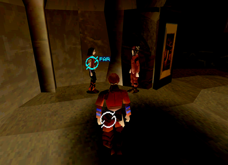 1. Examine Rhagg or Paet to hear their conversation from afar. |
2. Rhagg wants Paet to join the Seekers. |

| Optional Conversation # 24
Disc: 4 Location: Seekers' Stronghold
Characters: Simeon and
Reuben Criteria: Before talking to Gash and Zadoc in the
library, go downstairs and into the purple door. You'll find the Seekers
Simeon and Reuben. Talk to them from afar to hear 2 optional conversations.
|
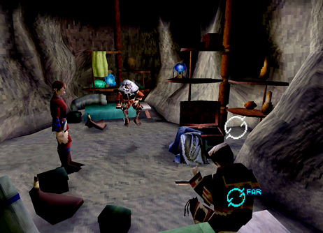 1. Simeon and Reuben can be found downstairs. |
2. Apparently, Questers are like soldiers or knights in training. |

| Optional Conversation # 25
Disc: 4 Location: Seekers' Stronghold
Characters: Rhagg and
Perez Criteria: After Azel wakes up but before talking
to Gash in the Observatory, go downstairs to find Rhagg and Perez out
in the open. Talk to them from afar to hear their conversation. |
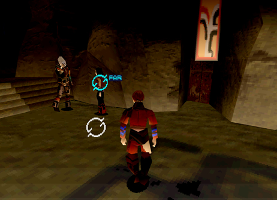 1. You'll find Rhagg and Perez downstairs out in the open. |
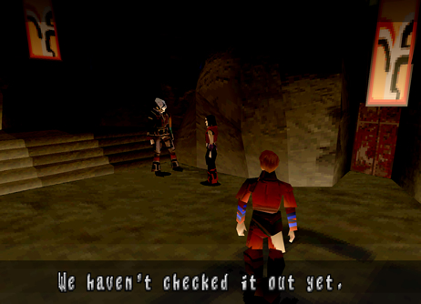 2. Perez wants to explore some mysterious ruins in the Forest of Zoah. |
| Optional Conversation # 26
Disc: 4 Location: Seekers' Stronghold
Characters: Simeon and
Reuben Criteria: After Azel wakes up but before talking
to Gash in the Observatory, go back downstairs and into the purple door.
Talk to Simeon and Reuben from afar, to hear 2 new optional conversations. |
1. Talk to Simeon and Reuben before talking to Gash in the Observatory. |
2. Perez wants to explore some mysterious ruins in the Forest of Zoah. |

| Optional Conversation # 27
Disc: 4 Location: Seekers' Stronghold
Characters: Ladha and
Shella Criteria: After Azel wakes up but before talking
to Gash in the Observatory, go back downstairs and into the red door
behind where Rhagg and Perez are standing. Inside you'll find Ladha
and the mute girl Shella. Talk to them from afar to hear their conversation. |
1. Talk to Ladha and Shella in the storeroom. |
2. Shella doesn't talk much. |


| Optional Conversation # 28 (Missable after going to the Forest of Zoah)
Disc: 4 Location: Seekers' Stronghold
Characters:
Ladha Criteria: After talking to Gash in the Observatory
but before going to the Forest of Zoah, go back downstairs and into
the purple door under the ramp. You will find Ladha in front of a giant
statue. This is a normal conversation but it can be missed once you
go to the Forest of Zoah. |
1. Ladha is praying in front of a giant statue. |

| Optional Conversation # 29 (Missable after going to the Forest of Zoah)
Disc: 4 Location: Seekers' Stronghold
Characters: Azel and Shella
Criteria: After talking to Gash in the Observatory
but before going to the Forest of Zoah, go to the main entrance of the
stronghold. You will find Azel and Shella standing there. Talk to them
from afar to hear 2 optional conversations. |
1. You'll find Azel and Shella back up near the entrance. |
2. The two girls seem to have a lot in common. |


| Optional Conversation # 30 (Missable after going to the Forest of Zoah)
Disc: 4 Location: Caravan Characters: Kou and Fei Criteria: After talking to Gash in the Observatory
but before going to the Forest of Zoah, go back to the Caravan. Talk
to Kou and Fei inside their tent for some new conversations from afar.
This conversation will change slightly if you didn't save Enkak. |
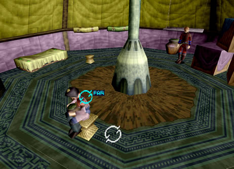 1. Return to the Caravan before going to the Forest of Zoah and enter Fei's tent. |
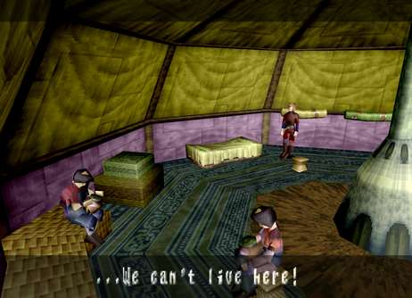 2. The inhabitants of the Caravan can't catch a break! |
| Optional Conversation # 31
Disc: 4 Location: Caravan Characters:
Kou and Fei Criteria: After defeating the Infested Grig Orig
and returning from the Forest of Zoah, go back to the Caravan. Go into
Kou and Fei's tent to hear 2 more optional conversations from afar.
Again, if you failed to save Enkak the conversation will differ. |
1. Return to the Caravan destroying Grig Orig. |
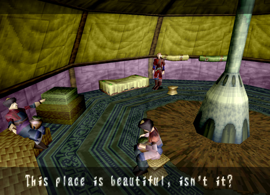 2. Maybe everyone in the Caravan can settle down now? |
| Optional Conversation # 32
Disc: 4 Location: Seekers' Stronghold
Characters: Simeon and
Reuben Criteria: After defeating the Infested Grig Orig
and returning from the Forest of Zoah, go back to the Seekers' Stronghold.
Go downstairs and into the green door to find Simeon and Reuben. Talk
to them from afar for 2 optional conversations. |
1. Go downstiars to find Simeon and Reuban. Talk to them from afar. |
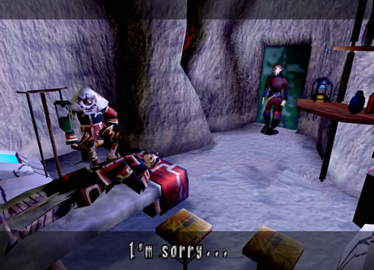 2. Reuban is hurt bad! |

| Optional Conversation # 33 (Secret Dialogue Missable after talking to Ladha)
Disc: 4 Location: Excavation Site Characters: Azel Criteria: After bringing Azel back from the Underground
Ruins of Uru, before you go back to the Seekers' Stronghold, bring Azel
to the Excavation Site. She will be standing in the back looking up
at the giant relic. Examine her from afar and close up for a couple
lines of secret dialogue. |
1. Bring Azel to the Excavation site for some secret dialogue! |
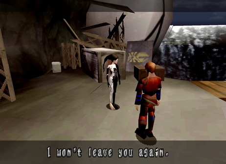 2. From now on, Azel will stay by your side! |

| Optional Conversation # 34 (Missable if you talk to Ladha)
Disc: 4 Location: Seekers' Stronghold
Characters: Simeon and
Reuben Criteria: After bringing Azel back from the Underground
Ruins of Uru go back to the Seekers' Stronghold. Don't talk to Ladha
at the entrance or you will miss this dialogue. Go downstairs and into
the green door to find Simeon and Reuben. Talk to them from afar for
1 more optional conversation. |
1. Don't talk to Ladha yet, go downstiars and talk to Reuban for 1 new conversation. |
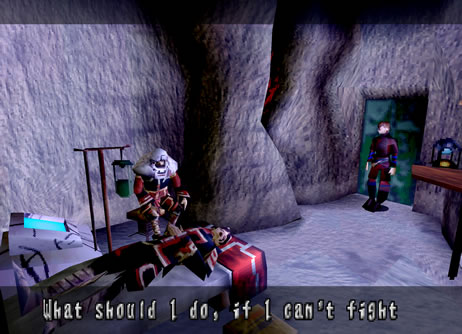 2. Reuban needs some serious healing! |
| Optional Conversation # 35 (Secret Dialogue)
Disc: 4 Location: Excavation Site Characters: Azel Criteria: Before going to the Tower, the final
area of the game, go back to the Excavation Site and talk to Azel one
more time for some more secret dialogue. |
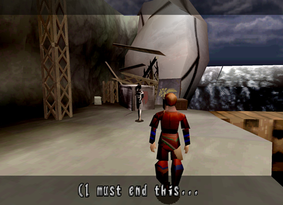 1. Before going to the final area of the game, bring Azel back to the Excavation Site. |
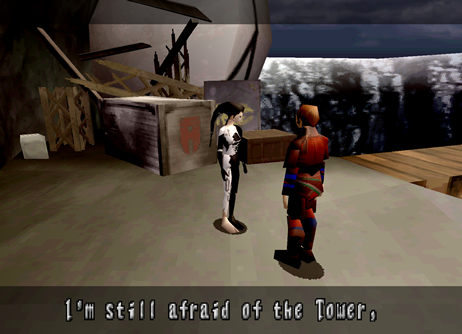 2. You'll get some more hidden dialogue! |